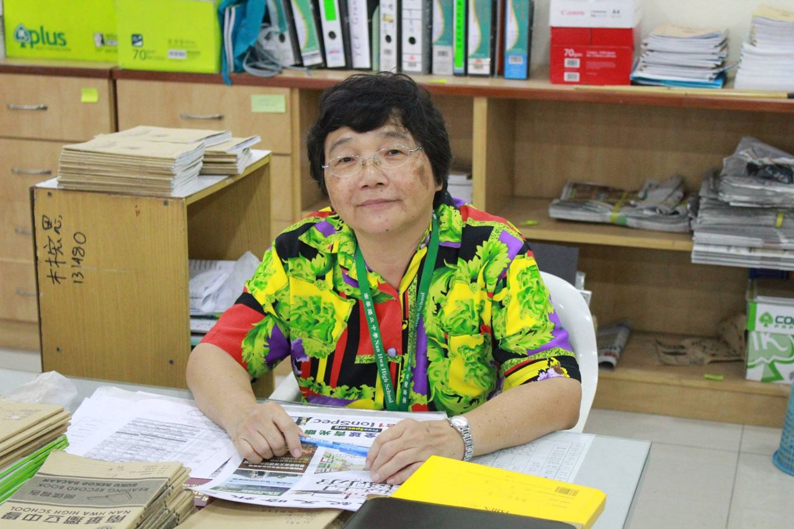

陈明芬老师表示：你我相识一场，是缘分，更是情分。因此考得佳绩，大家共同欢欣与雀跃
陈明芬老师表示：你我相识一场，是缘分，更是情分。因此考得佳绩，大家共同欢欣与雀跃。
给初一爱、初二爱与高二爱的宝贝们
15/3/2018 考试科目
初中：数学、辅导和美术2（丙）
高中理科班：电概
高中文商班：电概、商业和美术2（丙）
高中美术班：电概和美术2（丙）
16/3/2018 考试科目
初中：照常上课
高中理科班：高数
高中文商班：高数和经济学
高中美术班：高数
*美术2（丙）为创意表现，请考生们自备颜料、工具、水杯、报纸等物品。
考试规则提醒：考试开始后三十分钟内，以及考试结束前十五分钟不允许上厕所。
